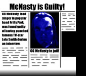

At a gig in Rochester the band trashed their instruments halfway through the intro to the first song. There was a riot and the police had to break it up with teargas and rubber bullets. This is often hailed as one of the best Frilly gigs ever.
 At the band's first appearance on national TV they all fell asleep due to too much partying the night before. When the talkshowhost tried to wake them up CC punched her in the nose. At the court proceedings CC claimed he was innocent. Problem was, four million witnesses said he wasn't. This was before the band's big success. Today CC wouldn't have got his two weeks in jail. Which means he wouldn't have all those mean tatoos. Which would be a shame.
At one time Frilly was staying at the same hotel as Oasis. While Oasis were out the guys climbed into their room from their balcony and trashed the whole place. There was a lot of headlines and Oasis got a reputation for beeing bad, while Frilly were considered as "really nice young men". Naturally the guys couldn't stand that, so during an MTV interview the guys confessed to the trashing. Nobody believed them and it took them several years to get their badboy image back. These days they only trash their own hotelrooms.